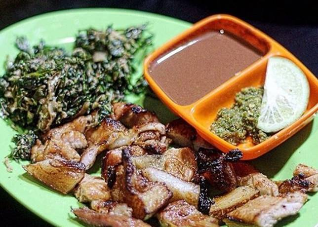

Babi Panggang Karo

Suku batak kebanyakan memiliki agama non Islam, sehingga memiliki makanan khas dengan bahan dasar babi.
Salah satu menu andalan dari Tanah Karo adalah babi panggang Karo.
Makanan khas batak ini sudah menjadi ikon Sumatera Utara dan hampir semua restoran Karo terbesar di Indonesia.
Babi panggang karo biasanya disajikan dengan makanan pelengkap seperti sup daging babi, daun ubi tumbuk yang dicampur dengan parutan kelapa, darah babi yang sudah diolah, sambal, kidu-kidu dan nasi putih hangat.
Bahan & alat:
Bahan:
- 1 kg daging babi, potong-potong
- 6 siung bawang putih
- 2 sdm kecap manis
- 2 batang daun serai
- asam patikala secukupnya
- garam secukupnya
Bumbu gota:
- 250 ml darah babi
- 5 siung bawang merah
- 3 siung bawang putih
- 5 cabai rawit merah
- 2 lembar daun jeruk purut
- andaliman secukupnya
- garam secukupnya
Langkah memasak:
- Potong daging babi berukuran kecil-kecil, lalu baluri daging dengan perasan air jeruk nipis secara merata.
- Kemudian, haluskan daun serai dan bawang putih, lalu tuang kecap manis. Aduk-aduk hingga merata, lalu sisihkan.
- Setelah itu, siapkan alat panggangan. Letakkan potongan daging babi di atas panggangan, olesi dengan bumbu kecap yang sudah jadi.
- Bolak-balik daging sesekali, supaya matang menyeluruh. Jika sudah matang, angkat dan sisihkan dulu.
- Untuk membuat bumbu gota, haluskan bawang merah, bawang putih, cabai, andaliman, daun jeruk purut, dan garam, lalu sisihkan sebentar.
- Kemudian, ambil asam patikala dan bumbu dengan darah babi. Tambahkan garam sedikit.
- Masukkan semua bumbu ke dalam wajan, masak bumbu hingga matang. Kalau rasanya kurang pas, tambahkan dengan garam. Angkat jika sudah matang.